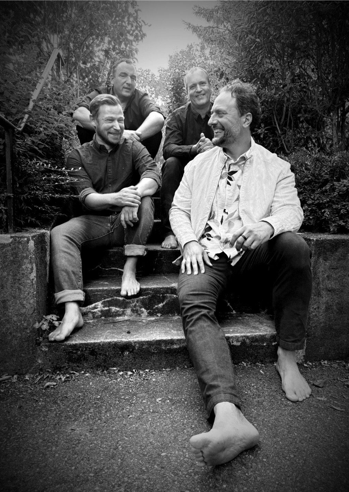
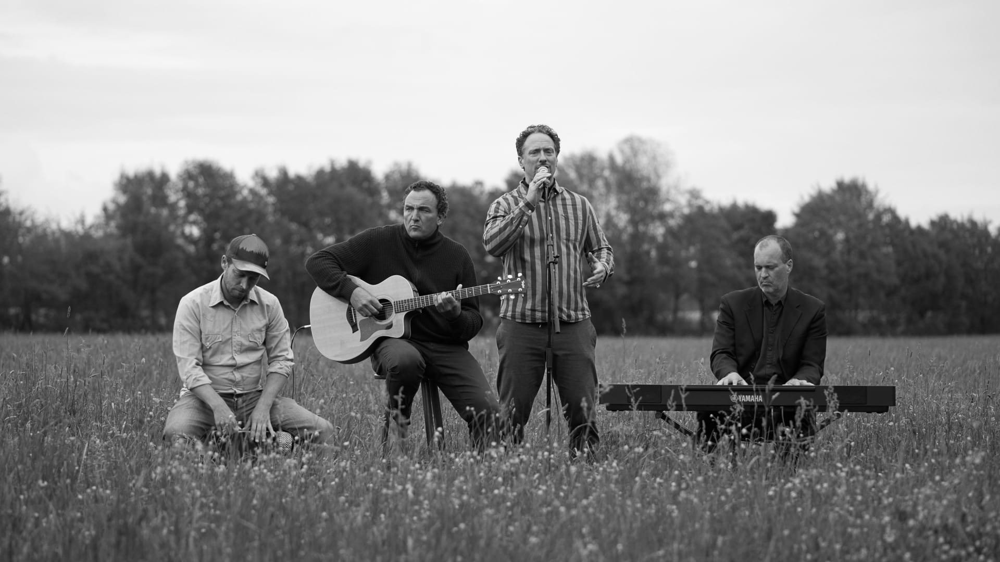
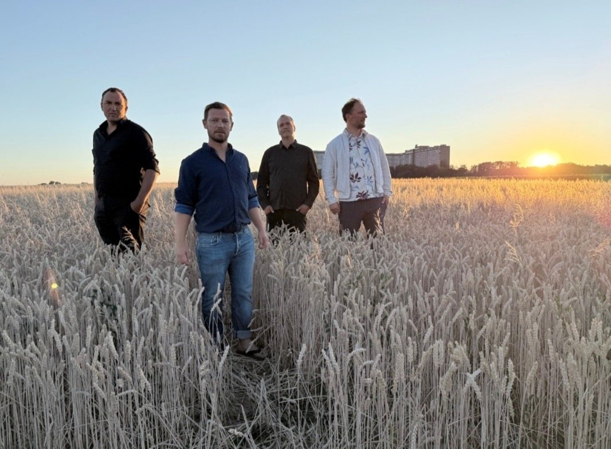
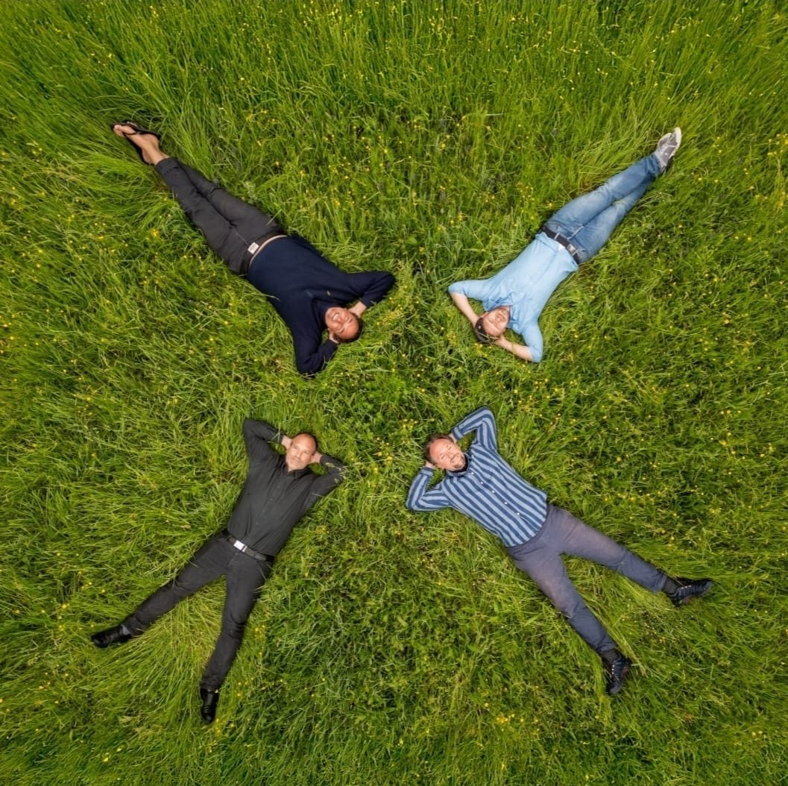

Ein musikalisches Feld, in dem immer wieder Neues entstehen kann.
2020 stand die Welt still, wir waren alle gezwungen, uns zurückzuziehen. Es war die Geburtsstunde von „Klein-Lukas“, einem Duo zweier alter Freunde, die sich bereits an der Uni kennengelernt hatten.

In ihrer vorherigen Band „Lukas“, die sich durch die äußeren Umstände auflösen musste, hatte Heiner Gitarre und Hermann Bass gespielt. In der Abgeschiedenheit eines alten Tübinger Ballettsaals entstanden zwischen den beiden neue Klänge. Heiner übernahm dabei den Gesang, Hermann die Gitarre.
Aus dieser vertrauten Nähe entstanden akustische Klänge, die auf die unterschiedlichen Genres verwiesen, aus denen die beiden kamen. Verantwortlich für die musikalische Vielfalt waren die Ungezwungenheit und das Vertrauen, das die beiden beim gemeinsamen Musizieren zuließen.
Durch den Einfluss von Christian und Uli veränderte sich die Musik später noch einmal, wurde breiter und bunter – und dennoch versuchten die vier, die Zärtlichkeit und das Ungezwungene dabei nicht zu verlieren.
Der Name felden geht zurück auf den Probeort in Leinfelden bei Stuttgart, steht aber auch für die natürlichen, unverstellten Klänge der vier Musiker.
Christian kommt mit Cajón und Didgeridoo dazu. 2022 folgen die ersten Auftritte.
Uli schließt sich mit seinem Keyboard an – er spielte schon vor 2020 bei „Lukas“.
Aus Klein-Lukas wird felden, benannt nach dem neuen Probeort in Leinfelden.
Mit Tontechniker „Magic“ Yannik entsteht das erste Album. Weitere Auftritte folgen.

Beim Abspielen wird das Video von YouTube (Google) geladen. Dabei werden Daten wie deine IP-Adresse an Google übertragen. Mehr dazu in der Datenschutzerklärung. Direkt auf YouTube ansehen


Ungezwungen spielen und dem Moment Raum geben.
Leise genug sein, damit die anderen gehört werden.
Die Grundlage, auf der immer wieder Neues entstehen kann.